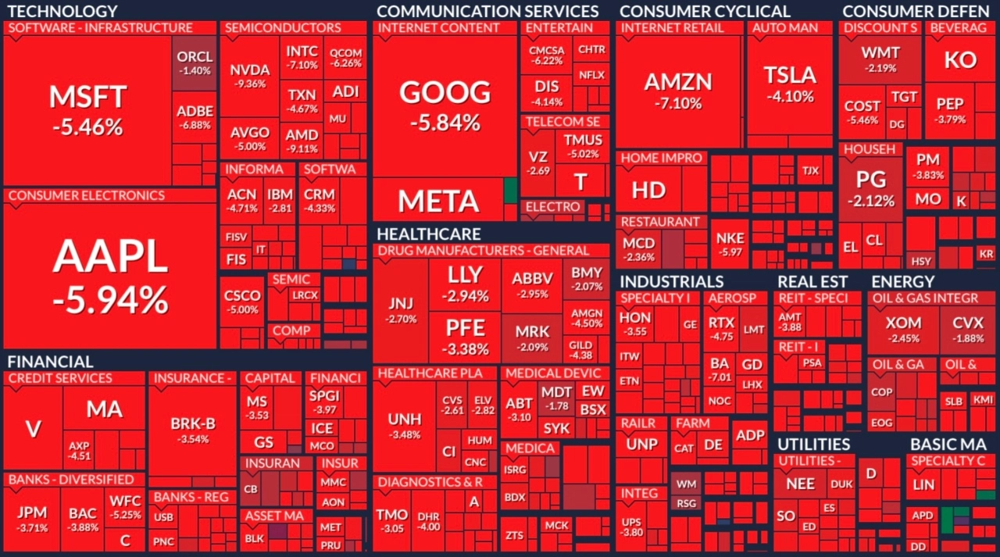

Mais ou est l'Europe ?

Blog, 09/04/2025, par Sven Franck (in english , in Deutsch)
TL;DR - L’Europe gâche une nouvelle fois l’occasion de s’imposer comme acteur géopolitique et de profiter de la présidence Trump pour freiner la montée de mouvements d’extrême droite dans ses États membres. Étrangement, la faute semble incomber aux États membres eux-mêmes, toujours réticents à faire avancer le projet européen.
Les marchés boursiers flambent en rouge MAGA partout dans le monde après que le président américain Trump a dégainé son arme favorite, les droits de douane, avant de partir pour un week-end de golf de façon néronesque. La Chine a réagi immédiatement. L’Union européenne, elle, ne fait… rien. Comme d’habitude ?
« It’s the economy, stupid » !
Même si l’on s’en tient au mantra des États membres selon lesquels l’Europe ne devrait être « forte que de nom », il est indéniable que nous sommes actuellement dans le champ économique – et cette fois, la balle est dans le camp de l’Union européenne. Si nous n’agissons pas, nous pouvons simplement suivre l’exemple de l’Irlande, qui tente de protéger les « tech bros » américains, ou l’Allemagne, soucieuse de ses industries automobiles. C’est exactement que Trump veut : nous diviser, et nous faire perdre individuellement à coups de « deals » bilatéraux.
Mais pourquoi cette impuissance ? Vous vous souvenez du Brexit ? L’UE avait su se montrer ferme quand un pays a voulu quitter le marché intérieur. Aujourd’hui, les États-Unis font leur propre sortie à l’échelle mondiale, et l’Europe blanchit de peur jusqu’à faire pâlir le bleu de son drapeau. Certes, Trump a fait baisser la température dans la pièce, laissant l’UE debout, exposée dans toute sa souveraineté vantée par nos gouvernements – tandis que les ministères européens achètent des logiciels Microsoft et des F-35 comme si aucune alternative européenne n’existait.
Au fond, nous avons élu des dirigeants pour qui l’Europe n’est qu’un service après-vente des puissances étrangères – à l’Est ou à l’Ouest, selon les intérêts. Le vide de vision et d’ambition pour une Europe unie et politique nous revient en pleine figure – à l’étranger, où un brin « d’unité » ne ferait pas de mal, comme chez nous, où il faut piétiner les promesses électorales. Demandez à Friedrich Merz, chancelier allemand, qui avait promis de ne pas toucher au frein à l’endettement, pour finalement le faire quelques jours après son élection. Résultat : son parti s’effondre comme les marchés, rattrapé dans les sondages par l’extrême-droite. Chapeau !
Ne jamais gâcher une bonne crise
Lorsque les États-Unis ont inscrit la cryptographie sur la liste des armes soumises au contrôle des exportations dans les années 1970, les entreprises concernées ont tout simplement quitté le pays. Le commerce trouve toujours un moyen de contourner les lois idiotes – et les États-Unis ne représentent que 13 % du commerce mondial. Alors pourquoi ne pas créer une nouvelle zone de libre-échange sans les États-Unis ? Et, tant que nous y sommes, peut-être réformer l’OMC pour adopter les décisions à la majorité qualifiée ? Quand la stabilité du dollar dépend d’un simple tweet, on peut aussi sérieusement envisager un panier de devises plus stable comme nouvelle réserve mondiale.
Les États-Unis ne s’offusqueraient probablement même pas si l’Europe annonçait, lors de la prochaine conférence de l’ONU sur le financement du développement, une initiative conjointe « EUAid » regroupant l’aide européenne et celle des États membres – pour combler le vide laissé par le démantèlement de USAid. On a annoncé 800 milliards d’euros pour armer l’Europe. Pourquoi ne pas aussi renforcer notre « soft power » ? L’Europe n’a pas l’habitude de bombarder se faire respecter, mais nous pouvons construire l’image de l’UE avec une diplomatie commune, des actions coordonnées et une voix unique. Même chose pour Radio Free Europe – « la voix du monde libre » aujourd’hui réduite au silence, après que le plus bruyant défenseur de la liberté d’expression a coupé les vivres.
Si l’Europe agissait vraiment comme une « Union », nous pourrions accomplir des miracles, même à l’intérieur de nos frontières. Mais nos gouvernements jouent la partition du « 27+1 » non seulement pour l’aide au développement ou la défense, mais aussi pour le marché intérieur. En chiffres : des coûts supplémentaires et une bureaucratie pesante pour les entreprises et les consommateurs, à hauteur de 2 800 milliards d'euros chaque année. À l’image de la Chine, nous pourrions amortir plus facilement les chocs extérieurs grâce à un marché intérieur robuste – si nos dirigeants avaient enfin le courage d’une intégration européenne trop longtemps repoussée.
Où est notre « Bauhaus » quand on en a besoin ?
Ce qui nous amène au cœur du problème : où est l’Europe ? Devons-nous nous résigner à des slogans bauhausiens au lieu d’initiatives stratégiques ? Faudra-t-il attendre 2027 et la fin du mandat de Trump pour initier un véritable programme de travail pour la défense commune et le cloud européen ? L’Union a ses lois, comme le Digital Services Act, mais on ne les utilise même pas pour limiter l’influence politique de puissances étrangères via les réseaux sociaux. Nous avons des données sensibles – et bien que l’encadrement juridique des transferts de données vers les USA soit bancal au mieux, on continue comme si de rien n’était ? Sérieusement.
Mais ce n’est pas « Bruxelles » qu’il faut accuser en premier. Si l’Europe est paralysée, la responsabilité pèse sur ses États membres. Nous avions un processus de Spitzenkandidaten pour désigner la présidence de la Commission, sur la base de la composition du Parlement européen. Si l’on écarte un candidat légitime – responsable devant le Parlement, et donc devant les citoyens – pour lui préférer une candidate imposée par les États les plus puissants, comme Ursula von der Leyen, cette personne dépendra toujours des faiseurs de reine. L’Europe par la suite n'agit pas pour l’unité ou ses citoyens – mais plutôt, en l’occurence, pour les profits de l’industrie automobile allemande.
Les dirigeants européens ne voient même pas l'éléphant dans la pièce : l’extrême droite mondiale est désormais MAGA jusqu’à l’os, mais nos États membres refusent toujours une réponse transnationale au nationalisme et taisent le lien évident entre elle et Trump – même quand un Musk affublé d’une tête de fromage claironne dans leur camp. Que ce soit l’AfD en Allemagne ou Le Pen en France, nous avons tous nos « Trumps » prêts à démolir la société, à évaporer nos richesses et à saboter la démocratie – jusqu’à rendre les citoyens impuissants. Que faut-il de plus ? La Commission européenne peut-elle enfin défendre l’Europe ? Et pourrons-nous, enfin, voter pour de nouveaux partis lors des élections à venir ?